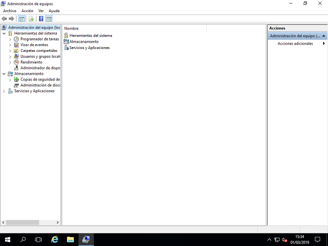
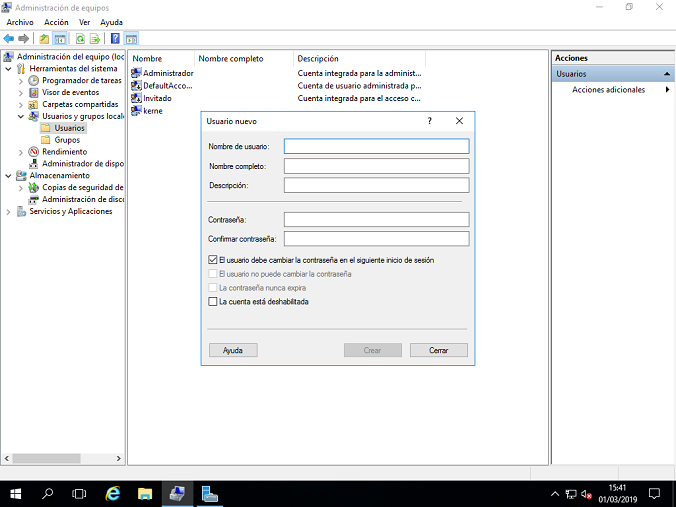
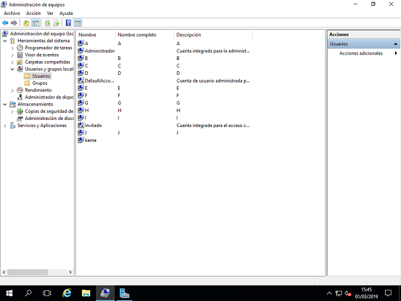
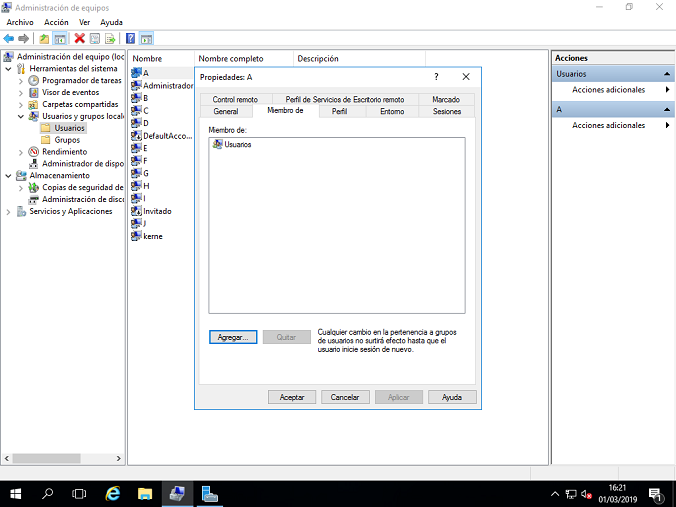
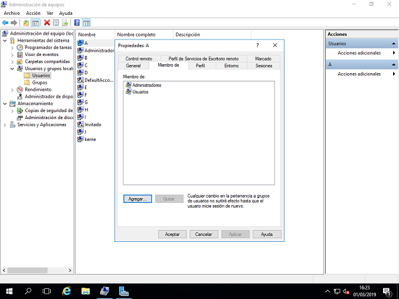
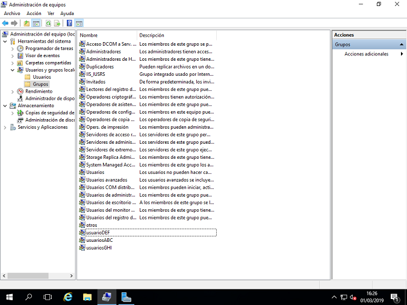
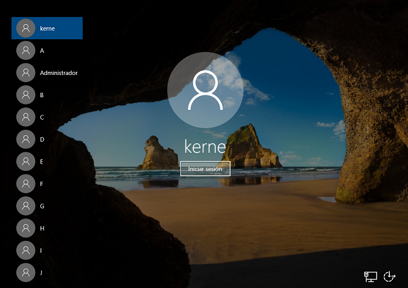

Administración de usuarios en Windows Server
La creación de usuarios en Windows Server 2016 es fácil. Lo primero que tenemos que hacer es ir a herramientas administrativas.
Nos abrirá una vista que encontraremos todos los servicios y aplicaciones de nuestro servidor.

Damos clic en “Usuarios y grupos locales”, nos mostrara dos carpetas una de usuarios y otra de grupos, aquí podremos gestionar todos nuestros usuarios y grupos del sistema.
Damos clic en “Usuarios”, clic derecho crear nuevo usuario. Aquí se ingresarán los datos del nuevo usuario así como sus parámetros de inicio de sesión.
Nos mostrar campos a completar como nombre de usuario, nombre completo, descripción, contraseña, confirmar contraseña y habilitar o deshabilitar permisos como si el usuario puede cambiar de contraseña en el siguiente inicio de sesión, habilitar o deshabilitar la cuenta y si la contraseña nunca expira.
Repetimos este proceso 10 veces, para tener 10 usuarios creados.

Listamos nuestros 10 usuarios creados.

La creación de grupos es igual de sencilla que la creación de usuarios. Ahora Damos clic en “Grupos”, clic derecho crear nuevo grupo. Se nos abrirá la ventana de creación de grupo, la cual nos pedirá nombre del grupo y otras opciones, damos clic “Aceptar”.

Repetimos el proceso 4 veces, para tener 4 grupos en el sistema creados.

Asignamos grupos a los usuarios, para esto damos clic derecho sobre un grupo, y nos dirigimos a propiedades. Ahí podremos buscar nuestros usuarios y asignarlo en el grupo.
Se muestra la vista de grupos con los nuevos grupos, la configuración fue la siguiente:

Reiniciamos el sistema, sólo para confirmar los usuarios ingresados en el sistema correctamente.
